國內實測：小紅書已取得商品資料
採集入口：這部電腦上已登入的小紅書原生 App，以 Computer Use 搜尋「培育彩宝」，讀取綜合／銷量結果及商品詳情。下列保留平台原用字；材質屬商家宣稱，尚未購樣送檢。
| 同次採集的商品原名 | 顯示價格 | 原始銷售標示 | 研究處理 |
|---|---|---|---|
| Nereus【冰裂霓虹培育帕拉伊巴】钇铝榴石椭圆裸石／蓝绿色调 D2 | 券後 ¥70 詳情 4 × 6 mm／0.7 ct | 已售 673 | 釔鋁榴石（YAG），另列仿寶石；與培育碧璽分開。 |
| 培育木佐色哥伦比亚祖母绿裸石 鹿玖 LUJOR JEWELRY | 券後 ¥85 | 已售 547 月銷量上漲超 3 倍 採集原文 | 裸石；無成品單款銷量。地名為商品原用字，沒有當作培育石產地證明。 |
| 培育拉贡色 薄荷色 金绿色彩色蓝宝石裸石 鹿玖 LUJOR JEWELRY | 券後 ¥85 | 已售 467 採集原文 | 多色／多規格裸石，價格與銷量未拆色。 |
資料期間：2026-10-23 12:13 的列表快照（UTC+8，截圖保存時間）。列表混有培育鑽及專拍連結，已在分析中排除；選「銷量」後的排序亦不完全按已售數字遞減，因此以可見樣本比較。此批可證實的是商品與顯示數字，週／月淨成交仍需跨期資料。
查看原始畫面：戒指詳情、銷量結果與 YAG 詳情
原文短鏈可能需要 App；下面保留當時可見畫面。完整文字與 SHA-256 隨工作台交付。


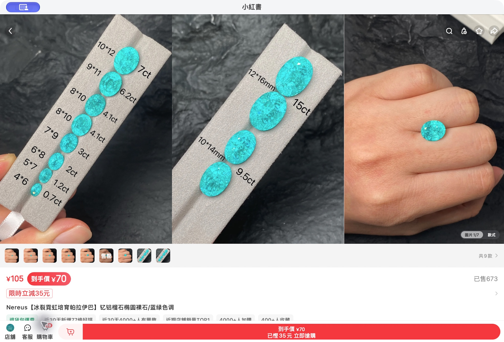
具體珠寶：先看這六款
圖片統一透明去背景，卡片內列名稱、規格、原幣價格及原文；按圖片可放大及切換來源圖。標籤描述已取得的證據；官網暢銷名單通常沒有固定銷售期間。下列海外報價是本次可讀公開報價，結帳、促銷、尺寸與地區可能影響實際金額。
展開其餘 9 款：全圈戒指、手鏈、高奢與水晶參照
* Aurate 暢銷標示來自官方系列的搜尋索引，證據強度低於當前頁面可見榜單。展示圖使用品牌原始透明圖或 AI 去背版本，供輪廓及色彩比較；細節與材質判斷以「原圖對照」及商品原文為準。C05 的官方結構化資料標「Blue Sapphire」，圖檔名含「Purple」；來源圖保留原頁所配照片，色相一致性仍待品牌確認。Pomellato 與 Boucheron 來源照片採同型號零售商圖，售價仍引用品牌官網。
品牌定位，一張表看清
以下為本研究選定的 45 個品牌，另加 3 個專業／零售參照。三類屬分析工作分類，品牌規模、材質與價位可交疊。圖示使用官方標誌或官網識別圖示；每個名稱可開啟對應品牌網站。
| 高奢品牌資產、工藝、系列識別及品牌溢價；兼含時裝品牌的珠寶線。 | 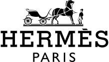 Hermès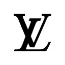 Louis Vuitton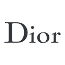 Dior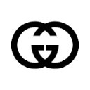 Gucci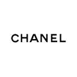 ChanelCartier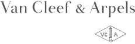 Van Cleef & ArpelsBuccellatiVhernierTiffany & Co.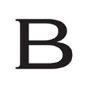 Bvlgari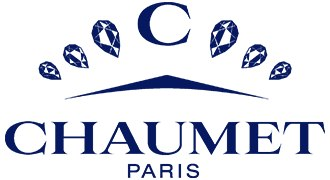 Chaumet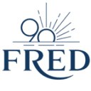 FredBoucheron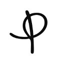 PomellatoQeelin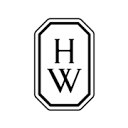 Harry WinstonGraffChopard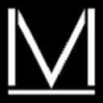 MessikaMikimoto |
|---|---|
| 輕奢／中高端日常佩戴與禮贈；銀、鍍金銀及 K 金均有；定價較易接近。 | |
| 基礎／獨立小眾入門直銷與獨立設計師品牌；規模和風格較細分，部分款式價格較高。 |
高奢只借鑑設計與系列經營；你的培育彩寶價格帶，直接競品應優先看小紅書成品、Scott Bonomo、Mejuri 與 Aurate。Hermès、LV、Gucci 的總體品牌收入包括非珠寶業務。
展開 48 個品牌的逐一財報頻率、範圍與原文
| 品牌 | 可得資料／頻率 | 用途／限制 |
|---|---|---|
| Hermès | Hermès 集團；年報／半年報；季度收入公告；無單款銷售 R13 | 整體品牌高奢；時尚首飾與貴金屬珠寶須另分 |
| Louis Vuitton | LVMH 集團／業務分部；年報／半年報；季度收入；無完整獨立珠寶報表 R4 · R20 | 時裝奢侈品牌；只比較珠寶產品線 |
| Dior | LVMH 集團／業務分部；年報／半年報；季度收入；無完整獨立珠寶報表 R4 · R20 | 時裝奢侈品牌；只比較珠寶產品線 |
| Gucci | Kering；品牌收入有披露；年報／半年報／季度收入；珠寶未獨立 R5 · R6 | 品牌財務包含時裝及皮具，不能直接推導珠寶需求 |
| Chanel | Chanel Limited 年度財務披露；未取得季度珠寶報表 R14 | 私營品牌仍有年度公開財務資料 |
| Cartier | Richemont；年報／半年報；Q1、Q3 銷售更新；珠寶品牌合併披露 R1 · R2 · R3 | 研究長期系列、材質及品牌溢價；不能拆出單品牌或 SKU 收入 |
| Van Cleef & Arpels | Richemont；年報／半年報；Q1、Q3 銷售更新；珠寶品牌合併披露 R1 · R2 · R3 | 研究長期系列、材質及品牌溢價；不能拆出單品牌或 SKU 收入 |
| Buccellati | Richemont；年報／半年報；Q1、Q3 銷售更新；珠寶品牌合併披露 R1 · R2 · R3 | 研究長期系列、材質及品牌溢價；不能拆出單品牌或 SKU 收入 |
| Vhernier | Richemont；年報／半年報；Q1、Q3 銷售更新；珠寶品牌合併披露 R1 · R2 · R3 | 研究長期系列、材質及品牌溢價；不能拆出單品牌或 SKU 收入 |
| Tiffany & Co. | LVMH；年報／半年報；季度收入；鐘錶珠寶分部為主 R4 · R20 | 官方公告點名系列時可作商業表現旁證 |
| Bvlgari | LVMH；年報／半年報；季度收入；鐘錶珠寶分部為主 R4 · R20 | 官方公告點名系列時可作商業表現旁證 |
| Chaumet | LVMH；年報／半年報；季度收入；鐘錶珠寶分部為主 R4 · R20 | 官方公告點名系列時可作商業表現旁證 |
| Fred | LVMH；年報／半年報；季度收入；鐘錶珠寶分部為主 R4 · R20 | 官方公告點名系列時可作商業表現旁證 |
| Boucheron | Kering；2026 年起有 Kering Jewelry 分部；年／半年／季度收入 R5 · R6 | 彩寶外觀與系列策略較相關；沒有培育彩寶單款銷量 |
| Pomellato | Kering；2026 年起有 Kering Jewelry 分部；年／半年／季度收入 R5 · R6 | 彩寶外觀與系列策略較相關；沒有培育彩寶單款銷量 |
| Qeelin | Kering；2026 年起有 Kering Jewelry 分部；年／半年／季度收入 R5 · R6 | 彩寶外觀與系列策略較相關；沒有培育彩寶單款銷量 |
| Harry Winston | Swatch Group 年報／半年報；未取得品牌獨立定期財報 R16 | 以母公司分部觀察，不能當 Harry Winston 單獨收入 |
| Graff | 本期未取得可連續比較的公開品牌定期財報；須逐一核對法定實體 | 以產品、定價及系列為比較；財務高峰暫不判定 |
| Chopard | 本期未取得可連續比較的公開品牌定期財報；須逐一核對法定實體 | 以產品、定價及系列為比較；財務高峰暫不判定 |
| Messika | 本期未取得可連續比較的公開品牌定期財報；須逐一核對法定實體 | 以產品、定價及系列為比較；財務高峰暫不判定 |
| Mikimoto | 本期未取得可連續比較的公開品牌定期財報；須逐一核對法定實體 | 以產品、定價及系列為比較；財務高峰暫不判定 |
| Pandora | 上市公司；年度／季度及半年資料可得；無月度 SKU 財報 R12 | 主力大眾珠寶；培育鑽資料與培育彩寶分開 |
| Swarovski | 本期取得年度業績新聞稿／可持續報告；完整定期財表未取得 R15 · P17 | 彩色水晶為設計競爭參考；材質須逐款辨識 |
| APM Monaco | 本期未取得可連續比較的公開品牌定期財報 P21 | 同時使用 CZ、合成紅寶石等，須看單款材料表 |
| Mejuri | 本期未取得公開季度／月度品牌財報；可核對官方商品與評論 P1 · P6 · P7 · P8 | 直接培育彩寶比較品牌，優先追蹤 |
| Aurate | 本期未取得公開季度／月度品牌財報；可核對官方商品與評論 P1 · P6 · P7 · P8 | 直接培育彩寶比較品牌，優先追蹤 |
| Monica Vinader | 英國法定年度公司賬目可查；本期已核至 2025-07-31；非月度財報 R18 | 公司賬目範圍及品牌全球業務須對齊 |
| Missoma | 英國法定年度公司賬目可查；本期已核至 2025-03-31；非季度財報 R19 | 私營不等於無年報；不能由公司年度收入定位單款 |
| PDPAOLA | 本期未取得可連續比較的完整定期財報；新聞營收與法定賬目另分 | 研究生日石、彩色設計及禮贈；逐款核對天然／合成／仿石 |
| TOUS | 本期未取得可連續比較的完整定期財報；新聞營收與法定賬目另分 | 研究生日石、彩色設計及禮贈；逐款核對天然／合成／仿石 |
| Thomas Sabo | 本期未取得可連續比較的完整定期財報；新聞營收與法定賬目另分 | 研究生日石、彩色設計及禮贈；逐款核對天然／合成／仿石 |
| DoDo | Kering Jewelry 分部；年／半年／季度資料；無單款銷售 R5 · R6 | 系列化、串飾與情感禮贈比較 |
| Brilliant Earth | 上市公司 BRLT；10-K 年報／10-Q 季報；業績簡報 R11 | 培育鑽及高級珠寶渠道比較；本期不當作培育彩寶證據 |
| KAY | Signet 母公司 10-K／10-Q；品牌表現部分披露；無每月單款完整財報 R17 | 美國大眾珠寶零售商，屬價格及渠道比較，非純小眾品牌 |
| Zales | Signet 母公司 10-K／10-Q；品牌表現部分披露；無每月單款完整財報 R17 | 美國大眾珠寶零售商，屬價格及渠道比較，非純小眾品牌 |
| Ana Luisa | 本期未取得品牌全球業務可連續比較的公開定期財報 | 以日常款、直銷定價及搭配為比較；並非全部銷售培育彩寶 |
| Linjer | 本期未取得品牌全球業務可連續比較的公開定期財報 | 以日常款、直銷定價及搭配為比較；並非全部銷售培育彩寶 |
| Quince | 本期未取得品牌全球業務可連續比較的公開定期財報 | 以日常款、直銷定價及搭配為比較；並非全部銷售培育彩寶 |
| GLDN | 本期未取得品牌全球業務可連續比較的公開定期財報 | 以日常款、直銷定價及搭配為比較；並非全部銷售培育彩寶 |
| Hey Harper | 本期未取得品牌全球業務可連續比較的公開定期財報 | 以日常款、直銷定價及搭配為比較；並非全部銷售培育彩寶 |
| Abbott Lyon | 本期未取得品牌全球業務可連續比較的公開定期財報 | 以日常款、直銷定價及搭配為比較；並非全部銷售培育彩寶 |
| Berricle | 本期未取得可連續比較的公開定期財報 P19 | 彩色 CZ 為仿石價格參考，不納入培育紅藍寶銷量 |
| CARAT* London | 本期未取得可連續比較的公開定期財報 | 逐款核對；品牌名稱與顏色不能證明寶石成分 |
| Gem Stone King | 本期未取得可連續比較的公開定期財報 | 逐款核對；品牌名稱與顏色不能證明寶石成分 |
| Scott Bonomo | 本期未取得公開財報；有官網 Top 10 Bestsellers 與具體培育彩寶款 P9 · P10 · P11 · P12 | 獨立設計師；純銀／14K 金跨價位，與你的產品更接近 |
| Chatham | 本期未取得可連續比較的公開定期財報 P13 | 高端小眾培育彩寶；本期樣本 USD 4,528，與入門小眾分開 |
| Shop LC | Vaibhav Global 上市母公司；年度／季度報表；包含珠寶及生活用品 R7 · R8 · R21 | 有財務峰值可研究；合併收入不能當培育彩寶收入 |
| TJC | Vaibhav Global 上市母公司；年度／季度報表；包含珠寶及生活用品 R7 · R8 · R21 | 有財務峰值可研究；合併收入不能當培育彩寶收入 |
財務高位：找到紀錄，保留歸因邊界
| 公司／分部 | 核實到的高位或增長 | 當時公開的策略線索 | 對選款的意義 |
|---|---|---|---|
| Vaibhav GlobalShop LC／TJC 母公司 | FY2026 Q3（2025年10–12月）收入 INR 1,066 crore，按年 +9.1%；公司首個收入逾 1,000 crore 的季度。 R7 · R9 · R10 | 電視與數碼零售並行，商品組合及節慶銷售。公開報告未把紀錄拆至某件培育彩寶。 | 是公司季度收入紀錄。需另外取得商品資料，才可歸因於款式／材質；母公司亦售生活用品。 |
| Richemont珠寶品牌分部 | FY2024–2026 分部收入 €14.242bn → €15.328bn → 約 €16.5bn。FY2026 按固定匯率 +14%。 R1 · R2 | 多個珠寶品牌、長期系列、渠道與地區表現合計。 | 為所列三個年度的收入高位。Cartier、VCA 等合併披露，無法拆出某品牌單件的貢獻。 |
| Kering Jewelry2026 Q3 | 收入 €239m，按報告匯率 +12%、可比 +11%；零售收入 +18%。 R5 · R6 | 公告點名 Pomellato Nudo／Iconica／Together、Boucheron Quatre／Serpent Bohème，以及 Qeelin Wulu Purple Jade。 | 同季公告支持系列動能。2026 分部口徑有調整，現有序列不足以稱歷史峰值；未披露單 SKU 銷量。 |
| LVMH鐘錶珠寶 | 2026 首九月收入 €7.725bn，按報告匯率 +4%、有機 +8%；Q3 有機 +6%。 R4 | Tiffany HardWear、Knot、Sixteen Stone 及 Bulgari Eclettica 等系列獲點名。 | 將系列表現與具體款式分開。下表的 HardWear 純銀手鏈是系列樣本，沒有單款貢獻數字。 |
本期「高位」以收入紀錄或指定可比期間高點界定；未建立股價／市值歷史高峰序列，亦未找到可證實「某單款推出直接造成市值峰值」的資料。
其餘財報可得性：季度、半年、年度與月度如何分
| 披露類型 | 對應品牌／公司 | 原文 |
|---|---|---|
| 年報＋半年報＋季度收入 | Hermès、LVMH、Kering；季度公告通常只有收入，與完整季度財表有別。 | R13 · R4 · R5 |
| 年報＋半年報＋Q1／Q3 銷售更新 | Richemont；珠寶品牌主要合併披露。 | R1 · R3 |
| 年度／季度業績與報表 | Pandora、Brilliant Earth、Signet（KAY／Zales）、Vaibhav Global。 | R12 · R11 · R17 · R21 |
| 年度披露／法定公司賬目 | Chanel、Monica Vinader、Missoma；Swarovski 已取得年度業績稿，與完整財表另分。 | R14 · R18 · R19 · R15 |
| 母公司財務 | Harry Winston 對應 Swatch Group，品牌／珠寶單款資料有限。 | R16 |
| 月度單款銷售財報 | 本期未取得。商品榜、評論、互動及可見已售數字另建監測表。 | 見國內採集方案 |
Brilliant Earth 的 2025 Q4 收入 USD 124.4m 為公司季度紀錄；fine jewelry bookings 按年 +34%，同季 GAAP 淨虧損 USD 1.3m。業務較偏鑽石，僅作渠道／品類參照。 R11
採用 Computer Use＋本機證據庫。先透過正常可見的 App／頁面採集，再由程式解析、去重、存檔及比較。正式 API 用於商家授權資料；第三方估算另列來源和方法。
| 平台 | 具體路徑與操作 | 今次已做／尚待完成 | 可交付的資料 |
|---|---|---|---|
| 小紅書 | 原生 App：搜尋 → 商品 → 綜合／銷量 → 詳情 → 複製分享連結；Computer Use 讀取 AX 文字並截圖，工作台入庫。 | 已跑通；11 筆觀察含重複商品，兩個公開分享網址。下次重訪同一商品，核對店舖／規格／永久 ID。 | 商品、照片、條件價格、已售原標示、當時排名、互動、時間與畫面。週／月數值由後續快照建立。 D1 · D2 |
| 抖音／抖店 | 優先正常商城商品頁的可見資料；商家自有店舖可走 OAuth，再調商品／訂單接口。競品研究需另採公開榜單。 | 網頁登入限制仍在；已找到本機抖音 App，但啟動逾時，今次未取得商品。下一步為恢復用戶端後按與小紅書相同的證據流程適配。 | 可見商品訊號，或授權店舖自己的準確資料。自家訂單 API 權限不等於全平台競品訂單。 N2 · N3 |
| 淘寶 | 正常用戶端的商品搜尋及詳情 → 抄錄商品 ID、規格、價格、銷售期間標籤 → 保存畫面 → 工作台；有店舖授權時另接官方資料。 | 本執行環境的網站安全限制仍阻擋直接存取。此平台適配器未跑通；需在正常可存取的人工採集端／正式授權來源取得證據後匯入。 | 商品層級快照；必須區分月銷、累計已售、付款人數及同款合併。 |
| 拼多多 | 正常用戶端商品頁 → 商品 ID＋店名＋拼單／單買價＋已拼原文 → 截圖及表格；自有店與聯盟可用權限分開核對。 | 本環境網站安全限制；平台專用採集未實作、未驗證成交資料。可先收集同一固定樣本池的人工證據，之後接有來源說明的資料供應商。 | 可見已拼／價格訊號；補上統計期間後再決定能否列入期間比較。 |
| 1688 | 供應端：按材質＋切割＋成品搜尋，保存 SKU、起訂量、階梯報價、成交標示和供應商；與零售需求表分開。 | 本環境網站安全限制；買家操作指南已找到，實際商品採集仍待可存取的正常採集端。先把批發成交與零售需求分庫。 | 批發供應及成本線索。階梯最低價、混批與裸石成交，均須保留原條件。 N12 |
以上包含實作結果與待接入路徑；只有小紅書在今次取得實際商品成交標示。其他四個平台未跑通的部分已列明，沒有以通用解析工具冒充五平台採集成功。
現成軟件究竟做甚麼
| 工具 | 真正的工作 | 本研究如何使用 |
|---|---|---|
| 蟬媽媽 | 對抖音公開渠道進行統計，提供商品／品牌／直播分析、月／季度增長榜及趨勢報告；頁面使用「銷量熱度／銷售額熱度」等口徑。 | 可作有標示方法的估算來源。應取商品 ID、期間、數值口徑、資料更新時間與匯出檔；今次只核功能原文，未購買或取得完整商品榜。 N4 · N5 · N6 |
| 飛瓜 | 提供平台商品、直播與達人分析。已讀取的官方說明為飛瓜快手，列 7／15／30／90 日估算銷售及匯出。 | 這份說明只證明快手產品能力；抖音版本需另驗證，未把兩者互相套用。 N7 |
| 八爪魚 Octoparse | 在可讀取頁面選取欄位，處理分頁／定時任務，匯出 CSV、JSON 或資料庫。 | 適合結構穩定的可見網頁；它負責提取已展示內容。登入失效、頁面變動和未公開的歷史成交，仍需另處理。今次未安裝／購買。 N8 · N9 · N10 |
| 影刀 RPA | 把重複的桌面／網頁操作編排成流程；官方有 RPA 與電商應用入口。 | 可作多平台流程編排候選。具體 App 可讀欄位、執行環境及例外恢復，須逐平台試跑；今次未以官網功能介紹充當採集成功。 N11 |
自己寫軟件：本次已交付的部分
彩寶公開資料工作台 v1 已讀取本次小紅書原文，生成 SQLite、JSON、CSV 及可查閱證據表。每筆保留商品名、條件價格、已售原文、時間、來源與檔案雜湊；分析時排除鑽石，另列 YAG。3 組測試已通過。
可重現資料整理、歷史快照與樣本內增量比較；採集動作目前由 Codex Computer Use 執行。尚未建成五平台獨立無人值守採集器，也沒有資料商累積的全市場歷史覆蓋。
- 建立固定樣本池：下一輪各平台先設定「培育祖母綠戒指／培育藍寶石戒指／培育紅寶石耳飾」等同義詞；每詞記錄前 30–50 件可讀商品，並分開廣告、專拍、裸石及成品。這是執行規格，尚未宣稱已採足。
- 保存可追溯快照：永久商品 ID＋店舖＋規格＋時間＋顯示銷售期間；原文連結、截圖及文字同步入庫。相同商品跨店或跨規格先獨立記錄。
- 每週／每月比較：至少相隔 7／30 日重訪。對相同口徑的精確顯示值計差，結果標「已售顯示值增量」；縮寫數字、重置或規格不明交人工覆核。
- 輸出可用名單：列樣本內增量領先款、實物圖、價格、材質、賣點、覆蓋率與來源；付費估算及授權真實交易另列。需要全平台銷冠時，先驗證榜單母體及固定期間。
原有每週一 10:00 週報安排沿用；每月首份加上月度回顧。GUI 採集需要 App 正常運作、登入有效及平台可讀；當次失敗須記錄平台與原因，並繼續其他可用來源。
本次覆核與最終選款表
本版已修正採集原文亂碼，統一卡片去背景、放大及來源對照。外部連結共檢查 172 個；受限、失效與可讀狀態另列。查看逐條連結檢查紀錄 ↗
| 已發現的問題 | 本版處理 |
|---|---|
| 品牌清單過長 | 三類合併成一張附標誌表；重複的財報說明移至可展開矩陣。 |
| 具體款式缺照片 | 15 個海外款式及國內戒指統一透明去背景；每張卡可放大、看來源圖及開商品原文。 |
| 部分 Scott 商品網址失效 | 從官方 Top 10 重新進入商品，修正三個商品連結；USD 250／185 對應銀版，與 14K 金分開。 |
| 宣稱與材質混淆 | 將「培育帕拉伊巴」標題中的 YAG 另列；新品、暢銷入選、店舖第一、累積已售和期間銷冠分開。 |
| 平台採集只寫限制 | 已跑通小紅書原生 App，交付實際觀察與可運作本機解析後台；其他四平台的未完成環節逐一列出。 |
| 因果證據不足 | 財務表改列紀錄／增長及官方策略；單款與公司市值峰值的因果關係保持待驗。 |
| 優先次序 | 具體方向 | 支持依據 | 下一個驗證 |
|---|---|---|---|
| 先看 | 綠色長方主石、銀厚鍍金細圈戒指 | 極星實驗室「翡冷翠」，¥369／已售 205，店內近期 TOP1 D1 | 同款 7／30 日增量、尺寸退貨、成品照片與材質送檢 |
| 先看 | 粉橙色橢圓單石戒指；深藍階梯切割四爪戒指 | Scott Bonomo 官網 Top 10；2 ct／3 ct，銀版 USD 250／185 P9 · P10 · P11 | 中國用戶偏好及本地定價測試；勿直接換算海外收入為本地需求 |
| 第二組 | 祖母綠耳圈／雙水滴耳飾 | Mejuri Zora／Ada 新品，USD 168／158 P7 · P8 | 佩戴舒適、耳針材質、互動轉成交 |
| 第二組 | 祖母綠長方石網球手鏈 | Aurate AU4334，USD 608，官方索引有暢銷標示 P1 · P2 | 扣具、長度、石位與價格接受度 |
| 設計參照 | Nudo 色塊；Serpent Bohème 水滴＋金珠邊 | 高奢原文點名系列；具體照片及型號已列 R5 · P14 · P15 | 形成自家輪廓與工藝，再測款；不以高奢系列成長直接推算培育彩寶銷量 |
以上優先順序屬分析判斷，未經本店成交測試。核心材料包括培育紅／藍寶石及祖母綠；天然彩寶、培育鑽、CZ、YAG、玻璃水晶獨立分類。 G1 · G2
展開全部原文來源及圖片出處
檢索／採集日：2026-10-23。財報按原文結算與發布日；商業網頁會更新，價格快照不等於成交時間。App 畫面保留於上方及工作台。所有分析判斷均在正文列明依據與待驗環節。
R1Richemont FY2026 全年業績，2026-05-22R2Richemont FY2025 全年業績，2025-05-16R3Richemont FY2027 第一季銷售，2026-07-15R4LVMH 2026 年第三季收入公告，2026-10-12R5Kering 2026 年第三季收入公告，2026-10-22R6Kering 2026 年分部披露調整，2026-03-16R7Vaibhav Global FY2026 第四季／全年公告，2026-05-21；NSE 交易所存檔R8Vaibhav Global FY2027 第一季公告目錄，2026-08-04；官網 PDF 目前失效R9Vaibhav Global FY2026 第二季簡報；BSE 交易所原文R10Vaibhav Global FY2026 第三季公告；NSE 交易所存檔R11Brilliant Earth 2025 年第四季／全年業績，2026-03-05R12Pandora 財報入口；最新列示 Q2 2026R13Hermès 財務入口；已列 2026 年第三季收入R14Chanel 年度財務披露；已列 2025 年R15Swarovski Crystal Business 2024 業績新聞稿R16Swatch Group 財務報告入口R17Signet 財務公告入口；已列 FY2027 Q2R18Monica Vinader 法定公司賬目；截至 2025-07-31R19Missoma 法定公司賬目；截至 2025-03-31R20LVMH 珠寶及鐘錶品牌與分部說明R21Vaibhav Global 財報下載目錄G1GIA：合成寶石的界定與主要材料G2GIA：仿寶石、CZ、YAG、玻璃等的區別P1Aurate：培育祖母綠長方石網球手鏈 AU4334P2Aurate 官方 Baguettes 系列；搜尋索引有 Best seller 標示P3Aurate：培育祖母綠圓石網球手鏈P4Aurate：培育藍寶石長方石全圈戒指P5Aurate：培育紅寶石長方石全圈戒指P6Mejuri：Zora 培育藍寶石純銀耳圈，美國版本P7Mejuri：Zora 培育祖母綠鍍金銀耳圈，美國版本P8Mejuri：Ada 培育祖母綠雙水滴耳飾，美國版本P9Scott Bonomo：官方 Top 10 Bestsellers 頁P10Scott Bonomo：2 ct 粉橙色培育藍寶石單石戒指P11Scott Bonomo：3 ct 培育藍寶石羅盤爪單石戒指P12Scott Bonomo：14K 金粉橙色培育藍寶石方形耳釘P13Chatham：培育祖母綠戒指 CR15167YEMP14Pomellato：Nudo Petit London blue topaz 戒指；斯洛文尼亞官網P15Boucheron：Serpent Bohème XS 石榴石吊墜 JPN00629；日本官網P16Tiffany：HardWear 小型鏈結純銀手鏈 60153085；美國官網P17Swarovski Gema 耳環 5737454，美國官網，USD 199P18Mejuri：Inès 等官方暢銷款；多數為無色培育藍寶石P19Berricle 戒指；明列 Sapphire-Blue CZ，不能當培育藍寶石P20赫彼 HIBI 供應商裸石掛牌；義烏購商品 986940140P21APM Monaco：材質名單同時含 CZ、合成紅寶石及其他材料P22Mejuri：培育寶石分類指南P23Nordstrom：Aurate 培育紅寶石／祖母綠手鏈；獨立零售價格交叉核對N1小紅書：ERP 應用及商家授權範圍N2抖店開放平台：商家 OAuth 授權N3抖店開放平台：商品列表接口N4蟬媽媽：數據服務、銷量熱度及資料說明N5蟬媽媽：商品月／季度高增長榜N6蟬媽媽：商品趨勢報告N7飛瓜快手：商品銷售估算與匯出功能N8八爪魚：可視化提取欄位N9八爪魚：定時執行及 APIN10八爪魚：資料匯出格式N11影刀：RPA 產品官方入口N121688：WorldFirst 官方買家指南N13Chrome：activeTab 使用者觸發的短期頁面權限D1小紅書商品原文：極星實驗室「翡冷翠」培育祖母綠戒指D2小紅書商品原文：Nereus 冰裂霓虹釔鋁榴石裸石I1Pomellato 同款照片：AF Jewelers，PAB4030O6000000TLI2Boucheron 同款照片與規格：Eye Eye Isuzu，JPN00629
圖片與標誌的來源清單
標誌只作品牌識別；官網識別圖示亦列作圖示，與完整字標有別。部分取自 Google 官網 favicon 快取，Brilliant Earth 取自第三方標誌庫。商品照片使用品牌原圖；A01／A02 為同型號零售商照片，已另標。
| 項目 | 來源類型 | 原頁／原圖 |
|---|---|---|
| C01 | 官方商品圖 | 來源頁 · 原圖 |
| C02 | 官方商品圖 | 來源頁 · 原圖 |
| C03 | 官方商品圖 | 來源頁 · 原圖 |
| C04 | 官方商品圖 | 來源頁 · 原圖 |
| C05 | 官方商品圖 | 來源頁 · 原圖 |
| C06 | 官方商品圖 | 來源頁 · 原圖 |
| C07 | 官方商品圖 | 來源頁 · 原圖 |
| C08 | 官方商品圖 | 來源頁 · 原圖 |
| C09 | 官方商品圖 | 來源頁 · 原圖 |
| C10 | 官方商品圖 | 來源頁 · 原圖 |
| C11 | 官方商品圖 | 來源頁 · 原圖 |
| A01 | 零售商商品照片，同一型號 | 來源頁 · 原圖 |
| A03 | 官方商品照片 | 來源頁 · 原圖 |
| A02 | 零售商同款佩戴照片 | 來源頁 · 原圖 |
| X01 | 官方商品照片 | 來源頁 · 原圖 |
| Van Cleef & Arpels | 官方品牌圖檔 | 來源頁 · 原圖 |
| Hermès | 官方品牌圖檔 | 來源頁 · 原圖 |
| Cartier | 官方品牌圖檔 | 來源頁 · 原圖 |
| Vhernier | 官方品牌圖檔 | 來源頁 · 原圖 |
| Buccellati | 官方品牌圖檔 | 來源頁 · 原圖 |
| Dior | 官網識別圖示，Google favicon 快取 | 來源頁 · 原圖 |
| Gucci | 官網識別圖示，Google favicon 快取 | 來源頁 · 原圖 |
| Louis Vuitton | 官網識別圖示，Google favicon 快取 | 來源頁 · 原圖 |
| Chanel | 官網識別圖示，Google favicon 快取 | 來源頁 · 原圖 |
| Tiffany & Co. | LVMH 官網品牌標誌 | 來源頁 · 原圖 |
| Bvlgari | 官網識別圖示，Google favicon 快取 | 來源頁 · 原圖 |
| Chaumet | LVMH 官網品牌標誌 | 來源頁 · 原圖 |
| Graff | 官方品牌圖檔 | 來源頁 · 原圖 |
| Chopard | 官方品牌圖檔 | 來源頁 · 原圖 |
| Boucheron | 官網識別圖示，Google favicon 快取 | 來源頁 · 原圖 |
| Fred | 官網識別圖示，Google favicon 快取 | 來源頁 · 原圖 |
| Qeelin | 官網識別圖示，Google favicon 快取 | 來源頁 · 原圖 |
| Harry Winston | 官網識別圖示，Google favicon 快取 | 來源頁 · 原圖 |
| APM Monaco | 官方品牌圖檔 | 來源頁 · 原圖 |
| Pomellato | 官網識別圖示，Google favicon 快取 | 來源頁 · 原圖 |
| Mikimoto | 官方品牌圖檔 | 來源頁 · 原圖 |
| Pandora | 官網識別圖示，Google favicon 快取 | 來源頁 · 原圖 |
| PDPAOLA | 官方頁面 SVG | 來源頁 · 原圖 |
| Mejuri | 官網識別圖示，Google favicon 快取 | 來源頁 · 原圖 |
| Missoma | 官方品牌圖檔 | 來源頁 · 原圖 |
| Swarovski | 官網識別圖示，Google favicon 快取 | 來源頁 · 原圖 |
| Aurate | 官網識別圖示，Google favicon 快取 | 來源頁 · 原圖 |
| Monica Vinader | 官網識別圖示，Google favicon 快取 | 來源頁 · 原圖 |
| TOUS | 官網識別圖示，Google favicon 快取 | 來源頁 · 原圖 |
| Ana Luisa | 官方頁面 SVG | 來源頁 · 原圖 |
| Brilliant Earth | 第三方 logo 資料庫，原標示來源為品牌官網 | 來源頁 · 原圖 |
| Quince | 官方頁面 SVG | 來源頁 · 原圖 |
| Thomas Sabo | 官網識別圖示，Google favicon 快取 | 來源頁 · 原圖 |
| DoDo | 官網識別圖示，Google favicon 快取 | 來源頁 · 原圖 |
| GLDN | 官方品牌圖檔 | 來源頁 · 原圖 |
| KAY | 官網識別圖示，Google favicon 快取 | 來源頁 · 原圖 |
| Zales | 官網識別圖示，Google favicon 快取 | 來源頁 · 原圖 |
| Abbott Lyon | 官方品牌圖檔 | 來源頁 · 原圖 |
| Gem Stone King | 官方品牌圖檔 | 來源頁 · 原圖 |
| CARAT* London | 官方品牌圖檔 | 來源頁 · 原圖 |
| Scott Bonomo | 官方品牌圖檔 | 來源頁 · 原圖 |
| Messika | 官網識別圖示，Google favicon 快取 | 來源頁 · 原圖 |
| Shop LC | 官方品牌圖檔 | 來源頁 · 原圖 |
| TJC | 官方品牌圖檔 | 來源頁 · 原圖 |
| Chatham | 官方品牌圖檔 | 來源頁 · 原圖 |
| Linjer | 官網識別圖示，Google favicon 快取 | 來源頁 · 原圖 |
| Hey Harper | 官網識別圖示，Google favicon 快取 | 來源頁 · 原圖 |
| Berricle | 官網識別圖示，Google favicon 快取 | 來源頁 · 原圖 |
展開所需附錄後列印，可控制報告長度。